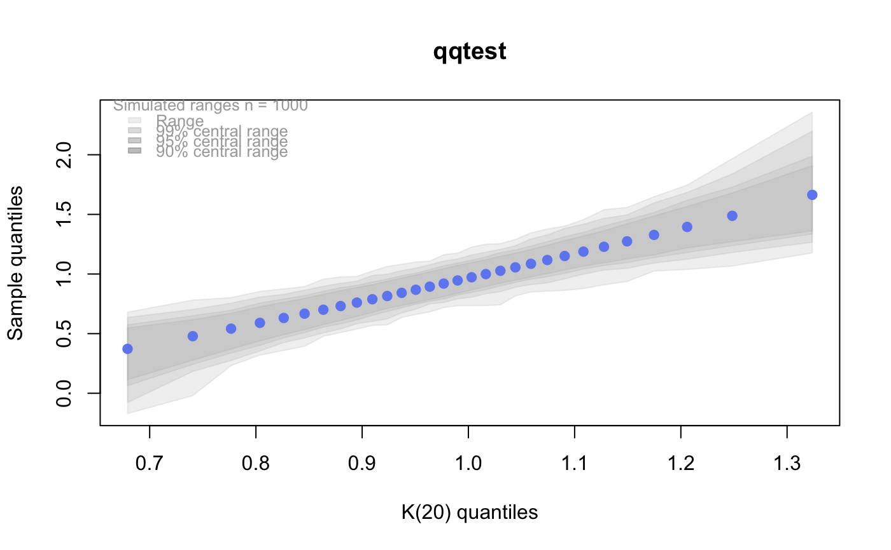

qkay The K distribution quantile functionqkay.RdQuantile function for the K distribution on df degrees of freedom having non-centrality parameter ncp.
A K distribution is the square root of a chi-square divided by its degrees of freedom. That is, if x is chi-squared on m degrees of freedom, then y = sqrt(x/m) is K on m degrees of freedom. Under standard normal theory, K is the distribution of the pivotal quantity s/sigma where s is the sample standard deviation and sigma is the standard deviation parameter of the normal density. K is the natural distribution for tests and confidence intervals about sigma. K densities are more nearly symmetric than are chi-squared and concentrate near 1. As the degrees of freedom increase, they become more symmetric, more concentrated, and more nearly normally distributed.
qkay(p, df, ncp = 0, upper.tail = FALSE, log.p = FALSE)
| p | A vector of probabilities at which to calculate the quantiles. |
|---|---|
| df | Degrees of freedom (non-negative, but can be non-integer). |
| ncp | Non-centrality parameter (non-negative). |
| upper.tail | logical; if |
| log.p | logical; if |
qkay returns the quantiles at probabilities p for a K on df degrees of freedom and non-centrality parameter ncp.
Invalid arguments will result in return value NaN, with a warning.
The length of the result is the maximum of the lengths of the numerical arguments.
The numerical arguments are recycled to the length of the result. Only the first elements of the logical arguments are used.
All calls depend on analogous calls to chi-squared functions. See qchisq for details on non-centrality parameter calculations.
p <- ppoints(30) # Get the quantiles for these points q5 <- qkay(p, 5) plot(p, q5, main="Quantile plot of K(20)", ylim=c(0,max(q5)))# # Do these EXACT quantiles from a K(5) look like they might # have been generated from K(20)? qqtest(q5, dist="kay",df=20)qqtest(q5)# for this many degrees of freedom it looks a lot like # a gaussian (normal) distribution # And should look really good compared to the true distribution qqtest(q5, dist="kay", df=5)# # See the vignette for more on the "K-distribution" #